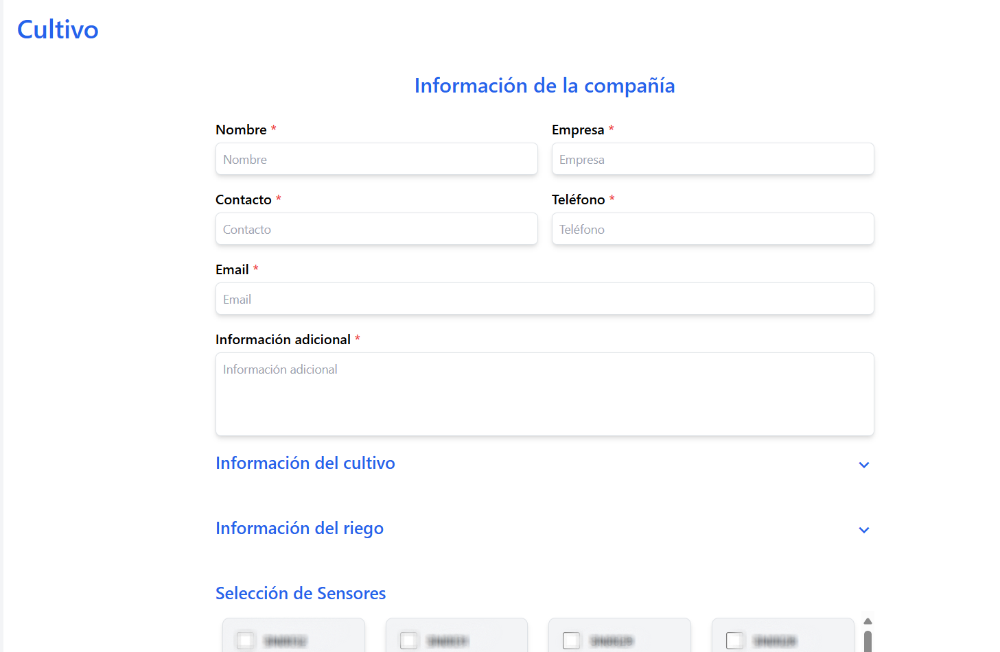

üå± Agroup ‚Äì Plataforma de Agricultura Inteligente
üìñ Resumen
Plataforma orientada a la digitalización del monitoreo agrícola mediante sensores IoT que envían datos ambientales y geoespaciales en tiempo real.
El sistema permite gestionar cultivos, usuarios y alertas automatizadas, además de visualizar las mediciones a través de paneles dinámicos e intuitivos.
Inicié como cofundador y luego asumí el rol de desarrollador principal, liderando la arquitectura técnica, la infraestructura en la nube y las estrategias de optimización del rendimiento.
üë§ Rol y Responsabilidades
- Rol Principal: Cofundador y Desarrollador Principal
- Funciones Clave:
- Liderazgo técnico y toma de decisiones estratégicas de arquitectura.
- Diseño, desarrollo y despliegue del backend y frontend.
- Configuración completa de la infraestructura en AWS.
- Mentoría técnica a practicantes y revisión de código.
üõ†Ô∏è Stack Tecnol√≥gico
- Backend: Spring Boot
- Frontend: React (migrado de v16 → v19)
- Base de Datos: AWS RDS (migración desde DynamoDB)
- Infraestructura: AWS Elastic Beanstalk, Route 53, Amplify, S3, Nginx
- Servicios Adicionales: Tareas programadas
üß≠ Arquitectura del sistema
El siguiente diagrama ilustra el flujo de datos principal y los componentes dentro de la plataforma Agroup.
graph LR
S[Sensor IoT] -->|MQTT/HTTP| A[API Spring Boot]
A --> B[(AWS RDS)]
A --> C[S3 Bucket]
A --> D[Frontend React]
D -->|Paneles dinámicos| U[Usuario]
üöÄ Funcionalidades Principales
- Recepción, almacenamiento y visualización de datos provenientes de sensores IoT.
- Administración integral de sensores, usuarios, cultivos y simulaciones.
- Generación de alertas automáticas por correo electrónico.
- Registro de coordenadas GPS junto con mediciones ambientales.
- Ejecución de tareas programadas (procesos y cálculos cada media hora).
üèÜ Logros T√©cnicos Destacados
- ⚡ Optimización de rendimiento: Reducción del tiempo de escritura de sensores de ~3 s a 300–400 ms (−85 %).
- ☁️ Infraestructura eficiente: Configuración de certificados SSL y despliegue en una instancia pequeña sin balanceador de carga, logrando un ahorro del 15 % mensual en infraestructura.
- üß© Migraci√≥n de datos: Redise√±o del modelo relacional y migraci√≥n del 70 % del backend desde DynamoDB (NoSQL) a RDS, mejorando consistencia y escalabilidad.
- üîî Automatizaci√≥n asincr√≥nica: Implementaci√≥n de alertas automáticas y tareas recurrentes sin bloquear el flujo principal.
- üß± Modernizaci√≥n del frontend: Actualizaci√≥n completa de React hasta la versi√≥n 19, garantizando compatibilidad y optimizaci√≥n del bundle.
- ü뮂Äçüíª Liderazgo t√©cnico: Coordinaci√≥n de esfuerzos del equipo, gu√≠a de practicantes y revisi√≥n de c√≥digo.
⚙️ Módulos y Flujos Destacados
1. Monitoreo Ambiental (Core del sistema)
- Captura continua de datos IoT: temperatura, humedad, iluminancia, etc.
- Procesamiento programado cada 30 minutos con agregación de promedios y detección de anomalías.
- Paneles dinámicos para análisis por fecha, variable y sensor.
üîÑ Flujo de Recolecci√≥n y Procesamiento de Datos
flowchart TD
A[Sensor IoT] --> B[API Gateway]
B --> C[Spring Boot Backend]
C --> D[(RDS - Datos ambientales)]
D --> E[Procesamiento programado cada 30 min]
E --> F[Panel React con gráficas y alertas]2. Gestión de Cultivos
- Registro de parcelas, ubicación geográfica y tipo de cultivo.
- Cálculo de indicadores personalizados (ej. humedad promedio por cultivo).
3. Alertas Inteligentes
- Configuración de umbrales de alerta por variable y cultivo.
- Envío automático de notificaciones por correo electrónico.
üåê Vista General del Sistema
| Inicio de Sesión | Panel de Control |
|---|---|
 |
 |
| Listado de Sensores | Configuración de Cultivos |
|---|---|
 |
 |
üìà Impacto
- Plataforma estable, escalable y con infraestructura optimizada.
- Reducción de costos operativos y de mantenimiento.
- Mejora significativa del rendimiento general.
- Incorporación ágil de nuevas funcionalidades sin comprometer la estabilidad.
- Capacidad comprobada para escalar a múltiples usuarios y sensores simultáneamente.